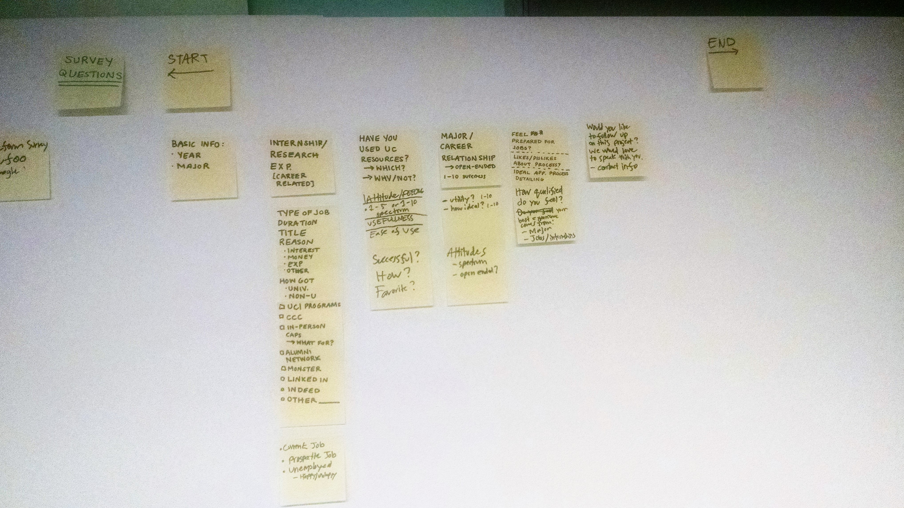

Reinventing Career Services
April - June 2015
"Work in Progress" was a product researched, conceptualized, and pitched over ten weeks for the Spring 2015 University of Chicago course MENG 25000: Introduction to the Design Process, a class team-taught by members of gravitytank.. Each team of five chose a problem area, and then pitched a product to be a solution. My team chose to tackle the frustration many students felt with university-provided career services.
One of the major problems students have at the University of Chicago is finding jobs and internships. Much of the coursework across departments is extremely theoretical, and is the subject matter of both core and major courses are catered to the significant amount of the undergraduate population who choose to continue on to graduate studies. Additionally, the Chicago Career Connection (CCC) job database designed for student job searches was difficult to use and often hindered or discouraged students from applying to jobs. With this problem in mind, ee set out to create a better way for students to find the jobs they wanted.

Through extensive interviewing with University of Chicago students and alumni, a robust survey, and several weeks of research we learned that the pain point wasn't CCC - students who knew what they were looking for in a job often found those opportunities with little difficulty. The problem was students logging in, seeing the search box, and having no idea what to look for. Students did not know their career ambitions, and were stalled before they ever could start their job search.
Through extensive research into the University of Chicago's Career Advancement and Advising programs, we were able to determine qualities that allowed some programs to succeed and others to fail. For example, UChicago Careers in Law (UCIL) advises all majors who are interested in pursuing law school, and provides support for the application process, an email list host with opportunities only relevant to law, and various workshops throughout the year. Students in this program were able to find opportunities, receive relevant resume and coursework advice, then successfully apply and be offered jobs. In contrast, the UChicago Careers in Science, Technology, Engineering, and Mathematics (UCISTEM) program sends several lengthy emails a week containing events, and job and internship opportunities across a wide variety of fields. The information overload is difficult to navigate, and the advisers for the program lacked the depth of knowledge STEM majors wanted in each of their respective fields. Even in STEM, different industries have different standards for resumes, and students in computer science especially struggled to have someone give pertinent feedback on their resumes - for instance, which class projects are significant enough to include when applying for a job. We interviewed a math major interested in actuarial science, who said her career adviser just googled "actuary jobs" when she went into a meeting.
The other problem encountered was translating the skills learned in classes into real-world applications. Students in "Experimental Physics" or "Analysis in R^n" have no idea what desirable job skills they have.
With this in mind, we put together "Work in Progress" (WIP), a new university career advising service. Each major had its own career adviser, who kept an active alumni network for underclassmen to connect with and learn about potential career paths. Students would meet with the adviser to explore different post-graduate paths based on specific major coursework they liked. Resume and interview prep would be geared towards the field of interest. The most important part of WIP was providing students with the personal attention needed to translate their schoolwork into real-world career options.
Our final pitch deck is available here. When we presented it to the class, over 90% voted to fund our product.